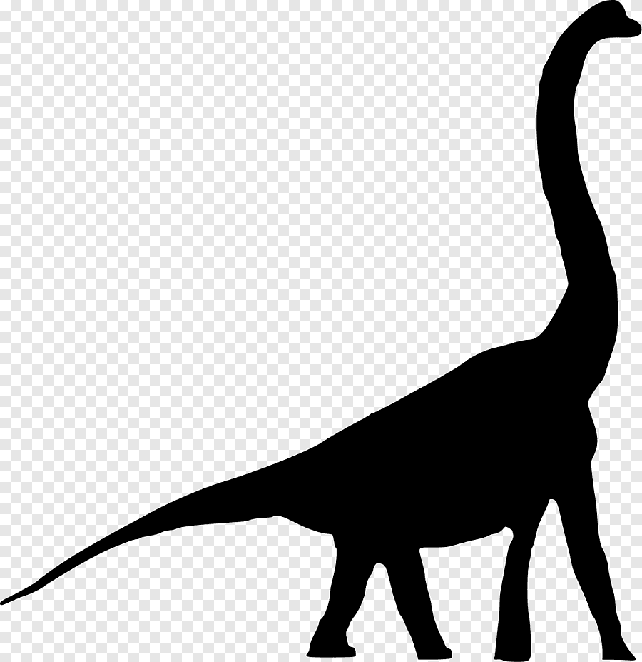
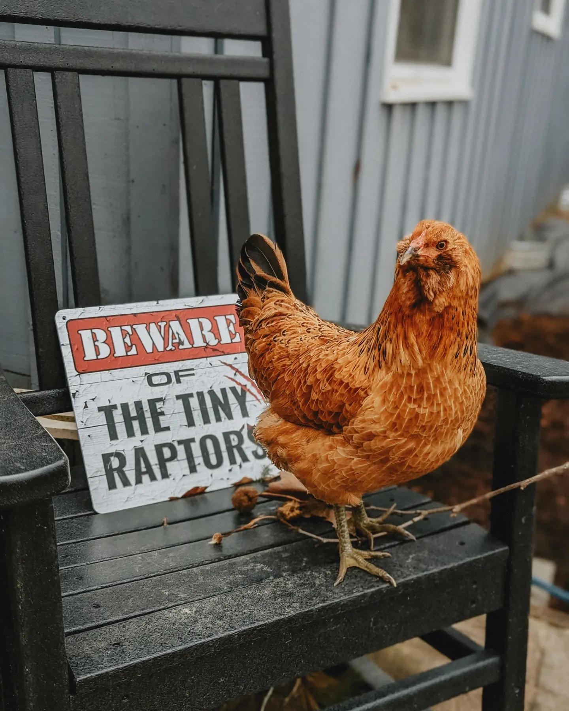
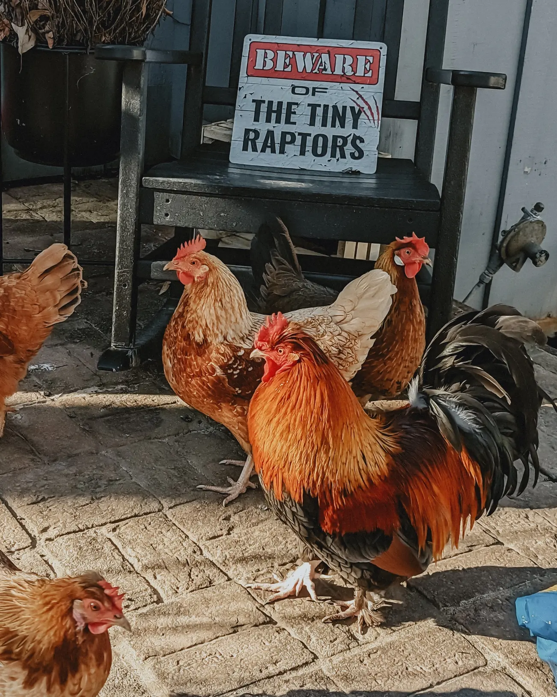
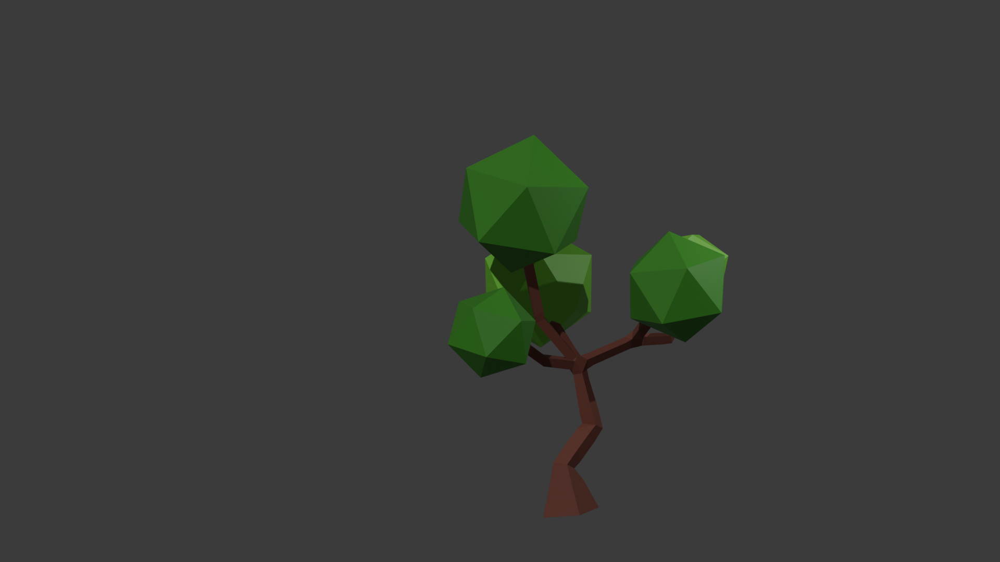
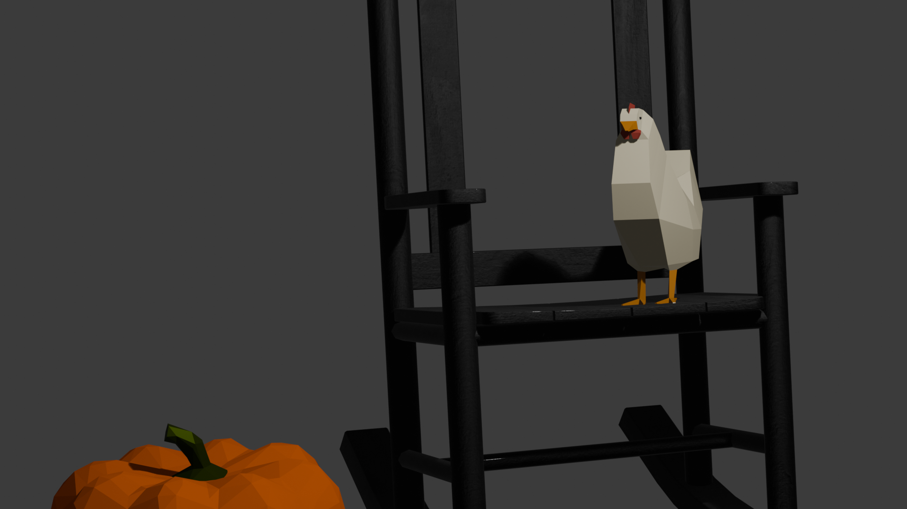
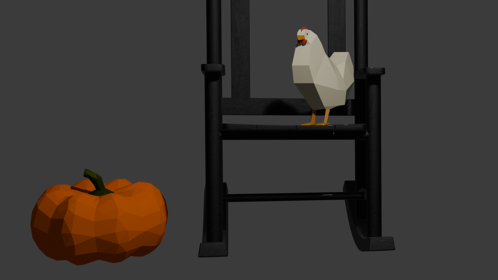

Ideation
In the initial stages of my project, I explored various concepts and ideas. Initially I thought of creating a dinosaur standing by a tree, but after I created the tree I decided to change courses. I wanted to make a low-poly version of a photo I took of our chicken on a rocking chair. By adding a pumpkin, I gave the scene more of a Fall vibe.
Inspiration
  Learning Approach
For this project, I had to learn new software and work with unfamiliar concepts. It was extremely difficult, and I had a challenging time navigating the software itself for awhile. After I became more familiar with the program, the lack of limits around what I could do was both fun and scary. Through the following tutorials I was able to build on the material given by our professor and learn how to create what I wanted:
Renders
Below are the renders of the tree and chicken I created:
  